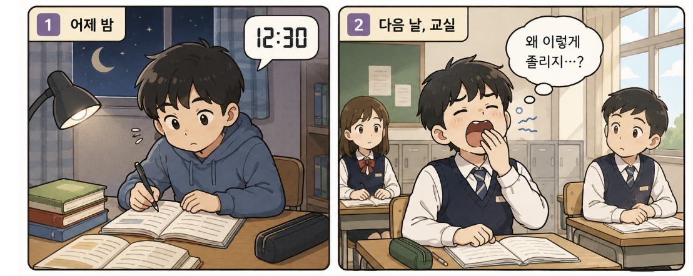
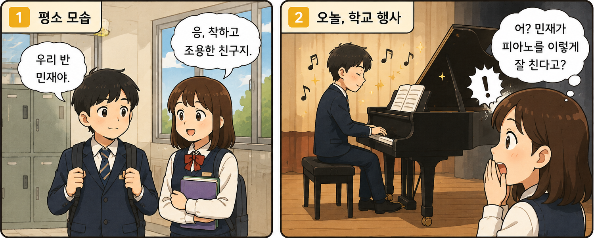
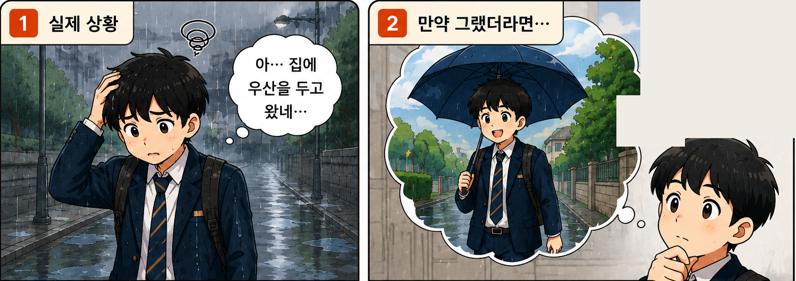
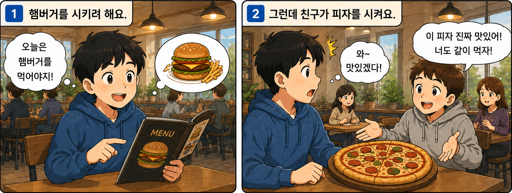
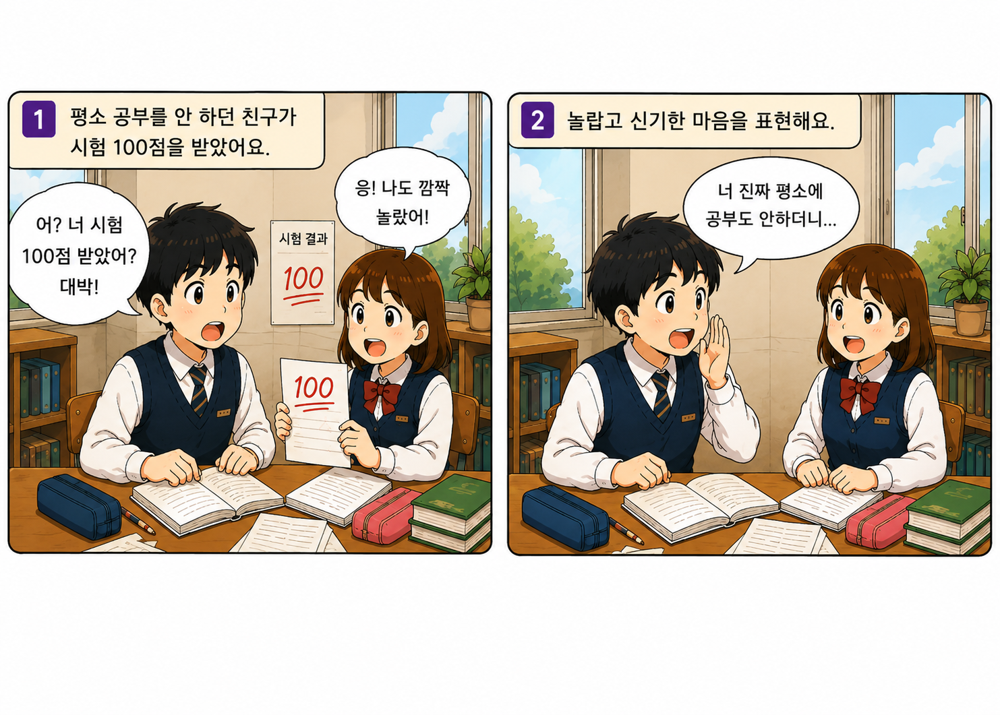
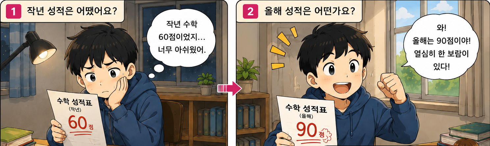

1과 문법 퀴즈
필수 문법 12문제 + 더 배워요 4문제 + 필수 문법 종합 4문제 · 총 20문제
인쇄하기
1. A/V-아서/어서 그런지
문제 1
힌트

위 그림을 알맞게 표현한 문장은 무엇입니까?
뒤 내용의 이유를 확실히 말하지 않고 추측하는 표현을 생각해 보세요.
1
수업을 들으려다가 잠이 들었어요.
2
어제 늦게 자서 그런지 오늘 수업 시간에 계속 졸려요.
3
어제 늦게 자는 줄 몰랐어요.
4
어제 일찍 잤더라면 오늘 졸렸을 거예요.
문제 2
힌트
빈칸에 들어갈 알맞은 말을 고르세요.
요즘 잠을 잘 못 ______ 수업 시간에 자꾸 졸려요.
‘자다’가 ‘-아서/어서 그런지’와 어떻게 결합하는지 보세요.
1
잤더라면
2
자는 줄 몰라서
3
자려다가
4
자서 그런지
문제 3
힌트
다음 문장이 맞으면 O, 틀리면 X에 체크하세요.
머리가 아파서 그런지 좀 쉬세요.
‘-아서/어서 그런지’ 뒤에 명령문이 올 수 있는지 생각해 보세요.
O
X
2. V-는 줄 알다/모르다
문제 4
힌트

위 그림을 알맞게 표현한 문장은 무엇입니까?
피아노를 잘 친다는 ‘사실을 몰랐다’는 뜻에 알맞은 표현을 고르세요.
1
민재가 피아노를 이렇게 잘 치는 줄 몰랐어요.
2
민재가 피아노를 잘 쳐서 그런지 기분이 좋아요.
3
민재가 피아노를 잘 쳤더라면 좋았을 텐데요.
4
민재가 피아노를 치려다가 노래를 불렀어요.
문제 5
힌트
빈칸에 들어갈 가장 알맞은 말을 고르세요.
저는 수호가 매일 아침 운동을 ______ 몰랐어요.
동사 ‘하다’ 뒤에 현재 사실을 나타내는 ‘-는 줄’을 붙여 보세요.
1
해서 그런지
2
했더라면
3
하는 줄
4
하려다가
문제 6
힌트
다음 문장이 맞으면 O, 틀리면 X에 체크하세요.
저는 오늘 학교에서 축제가 열리는 줄 알고 있었어요.
‘-는 줄 알고 있다’는 어떤 사실을 알고 있다는 뜻입니다.
O
X
3. A/V-았/었더라면
문제 7
힌트

위 그림을 알맞게 표현한 문장은 무엇입니까?
실제로는 우산을 가져오지 않은 과거 상황을 반대로 가정해 보세요.
1
우산을 안 가져와서 그런지 비를 맞았어요.
2
우산을 안 가져오는 줄 몰랐어요.
3
우산을 가져오려다가 집에 갔어요.
4
우산을 가져왔더라면 비를 맞지 않았을 텐데요.
문제 8
힌트
다음 중 형태가 바른 것은 무엇입니까?
과거 가정 표현 ‘-았/었더라면’의 형태를 확인하세요.
1
듣다 → 듣었더라면
2
만나다 → 만났더라면
3
먹다 → 먹았더라면
4
노력하다 → 노력하더라면
문제 9
힌트
다음 문장이 맞으면 O, 틀리면 X에 체크하세요.
내일 시간이 있었더라면 같이 영화 보러 가요.
‘-았/었더라면’은 이미 지나간 과거를 가정할 때 사용합니다.
O
X
4. V-(으)려다가
문제 10
힌트

위 그림을 알맞게 표현한 문장은 무엇입니까?
처음 하려던 행동과 실제로 하게 된 행동이 달라졌는지 보세요.
1
햄버거를 먹어서 그런지 배가 불러요.
2
친구가 피자를 시키는 줄 몰랐어요.
3
햄버거를 시키려다가 친구가 피자를 시켜서 같이 먹었어요.
4
햄버거를 먹었더라면 더 좋았을 텐데요.
문제 11
힌트
다음 중 형태가 바른 것은 무엇입니까?
ㄹ 받침 동사 뒤에는 ‘-려다가’를 씁니다.
1
만들다 → 만들려다가
2
먹다 → 먹려다가
3
앉다 → 앉려다가
4
마시다 → 마시으려다가
문제 12
힌트
다음 문장이 맞으면 O, 틀리면 X에 체크하세요.
친구에게 전화하려다가 시간이 늦어서 문자만 보냈어요.
‘전화하려다가 문자만 보냈다’처럼 행동이 바뀌었는지 확인하세요.
O
X
5. 더 배워요 · A/V-다니
문제 13
힌트

위 그림을 알맞게 표현한 문장은 무엇입니까?
예상하지 못한 사실에 놀라거나 감탄할 때 쓰는 ‘-다니’를 생각해 보세요.
1
친구가 열심히 공부했더라면 100점을 받았을 거예요.
2
평소에 공부를 잘 안 하던 친구가 시험에서 100점을 받다니, 정말 놀라워요!
3
친구가 100점을 받는 줄 몰랐어요.
4
시험에 비하면 공부가 쉬워요.
문제 14
힌트
다음 문장이 맞으면 O, 틀리면 X에 체크하세요.
매일 열심히 공부하다니, 정말 대단해요!
‘공부하다’ 뒤에 바로 ‘-다니’를 붙일 수 있습니다.
O
X
6. 더 배워요 · N-에 비하면
문제 15
힌트

위 그림을 알맞게 표현한 문장은 무엇입니까?
작년과 올해를 비교해 변화 정도를 나타내는 표현을 찾아보세요.
1
올해 성적이 좋아서 그런지 기분이 좋아요.
2
올해 성적이 90점인 줄 몰랐어요.
3
작년에 공부했더라면 90점을 받았을 거예요.
4
작년 성적에 비하면 올해 성적이 훨씬 좋아졌어요.
문제 16
힌트
다음 문장이 맞으면 O, 틀리면 X에 체크하세요.
열심히 하다에 비하면 결과가 안 좋아요.
‘-에 비하면’은 명사 뒤에 붙는다는 점을 생각하세요.
O
X
7. 필수 문법 종합
문제 17
힌트
빈칸에 들어갈 가장 알맞은 표현을 고르세요.
어제 늦게 ______ 오늘 아침에 너무 피곤해요.
피곤한 이유를 추측하는 문맥입니다.
1
자서 그런지
2
자는 줄 몰라서
3
잤더라면
4
자려다가
문제 18
힌트
빈칸에 들어갈 가장 알맞은 표현을 고르세요.
지현이가 피아노를 이렇게 잘 ______. 정말 놀랐어요.
피아노를 잘 친다는 사실을 몰랐다는 뜻입니다.
1
쳤더라면
2
쳐서 그런지
3
치는 줄 몰랐어요
4
치려다가
문제 19
힌트
빈칸에 들어갈 가장 알맞은 표현을 고르세요.
조금만 더 일찍 ______ 지하철을 놓치지 않았을 텐데.
지나간 과거에 ‘더 일찍 왔다면’이라고 가정하는 문맥입니다.
1
와서 그런지
2
왔더라면
3
오는 줄 몰랐으면
4
오려다가
문제 20
힌트
빈칸에 들어갈 가장 알맞은 표현을 고르세요.
도서관에 ______ 친구를 만나서 카페에 갔어요.
도서관에 가려고 했지만 다른 행동으로 바뀐 상황입니다.
1
가는 줄 몰랐는데
2
갔더라면
3
가서 그런지
4
가려다가
채점하기
다시 풀기